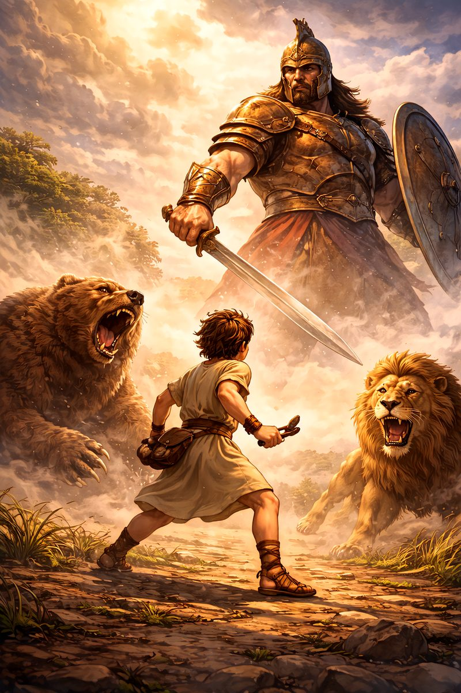
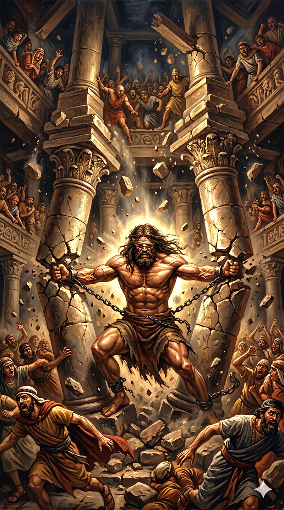
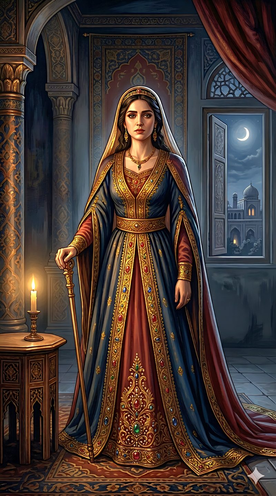
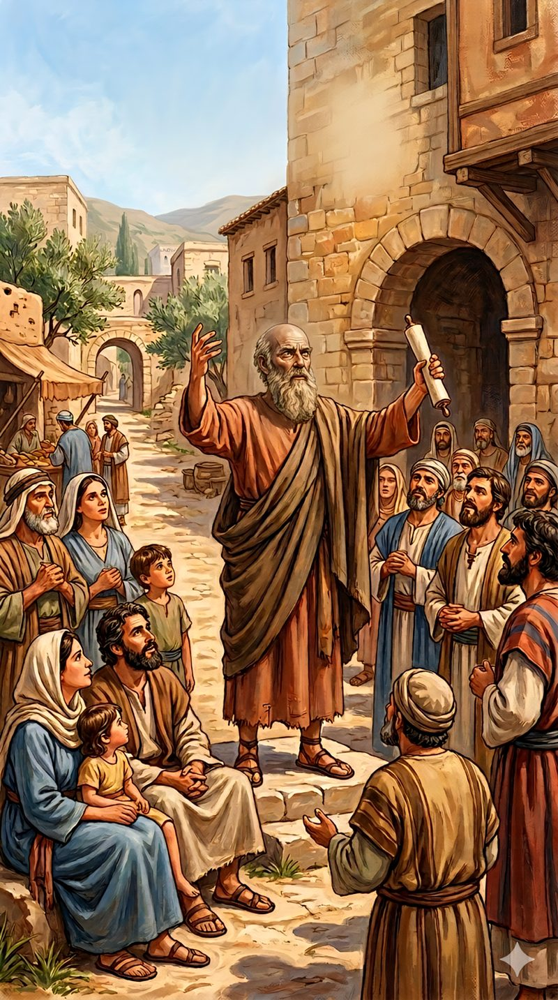
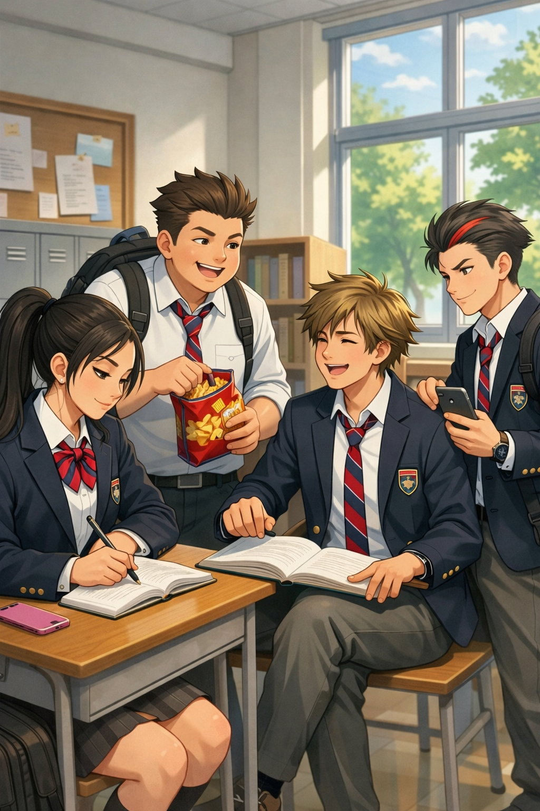
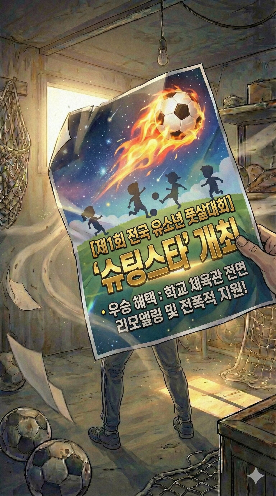
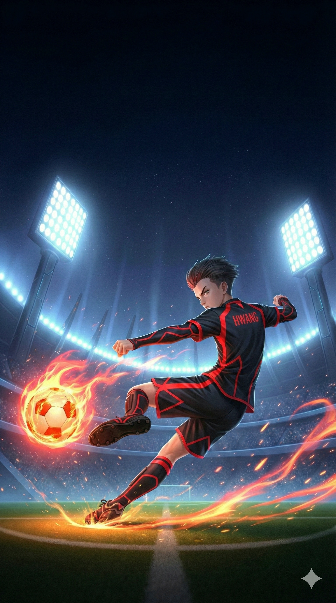
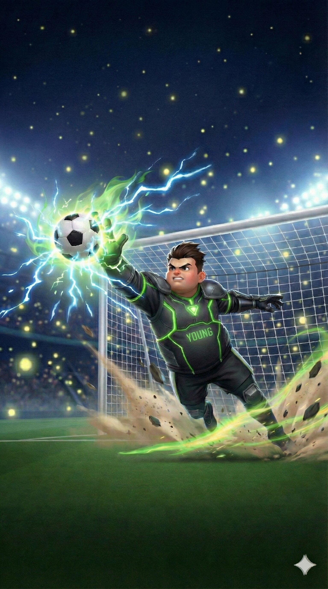

THE WORLD
평범한 아이들이 빛을 찾는 이야기
Miracle Shot은 특별한 영웅이 태어나는 이야기가 아니라, 남들과 조금 다르다는 이유로 소외받던 아이들이 서로의 다름을 받아들이고 공동체 안에서 자신의 재능을 발견해가는 이야기입니다. 좁은 풋살 코트에서 아이들은 경쟁자가 아니라 서로의 가능성을 발견하게 하는 동료가 됩니다.
FOUR KIDS, ONE MIRACLE
남들과 조금 다르다는 이유로 소외받던 평범한 아이들이 풋살 공동체를 통해 자신만의 진짜 빛과 하나님이 주신 달란트를 발견해가는 성장 드라마입니다.
과거의 영광을 잃고 방과 후 체육 교실마저 폐지될 위기에 놓인 이 코치는 전국 유소년 풋살대회 우승을 목표로 오합지졸 아이들을 모으기 시작합니다.
Miracle Shot은 특별한 영웅이 태어나는 이야기가 아니라, 남들과 조금 다르다는 이유로 소외받던 아이들이 서로의 다름을 받아들이고 공동체 안에서 자신의 재능을 발견해가는 이야기입니다. 좁은 풋살 코트에서 아이들은 경쟁자가 아니라 서로의 가능성을 발견하게 하는 동료가 됩니다.
한때 국가대표까지 바라보던 이 코치는 부상과 실패를 겪고 비정규직 강사로 살아갑니다. 해고와 체육교실 폐지라는 절망 앞에서 기도하던 어느 날, 창문으로 날아든 전국 유소년 풋살대회 전단지를 발견합니다.
이 코치는 각자의 결핍과 재능을 가진 황, 길, 고, 영을 차례로 발견합니다. 첫 훈련 날에는 길이 사방을 뛰고, 황이 슛으로 유리창을 깨고, 고는 책을 읽고, 영은 과자를 먹습니다. 혼돈 속에서 팀의 첫 호루라기가 울립니다.
한때 국가대표까지 지낸 유망주였지만 부상과 실패로 패배자가 된 비정규직 강사. 절망 속에서 기도하며 풋살대회를 발견하고, 성경 인물들의 지혜를 빌려 아이들의 숨은 가능성을 바라보기 시작합니다.

왜소한 체격 때문에 무시당하지만 벽에 대고 수없이 공을 차며 엄청난 슈팅 파워를 기른 소년입니다.
작지만 준비된 다윗처럼, 황은 자신의 약점을 핑계 삼지 않고 보이지 않는 곳에서 자신의 달란트를 갈고닦습니다.

통제 불능의 엄청난 스피드를 가진 산만한 아이. 넘치는 에너지를 올바른 곳에 쏟을 목적지를 찾아갑니다.
삼손처럼 넘치는 힘과 에너지가 방향을 잃으면 문제가 되지만, 올바른 목적을 만났을 때 강력한 쓰임이 될 수 있습니다.

뛰어난 동체시력과 패스 센스를 가졌지만 과거 계주에서의 실수로 인한 트라우마 때문에 결정적인 순간을 두려워합니다.
에스더처럼 동료를 믿고 두려움 속에서도 한 걸음 나아가는 용기를 배웁니다.

거대한 체격과 힘을 가졌지만 과거 실수로 친구를 다치게 한 뒤 자신을 움츠리고 사는 다정한 소년입니다.
바울처럼 자신의 힘을 남을 해치는 데 쓰지 않고, 소중한 것을 지키는 방패로 사용하기로 결심합니다.







Miracle Shot의 세계관을 음악으로 확장한 5곡의 오리지널 사운드트랙입니다. 네 아이의 달란트와 성장, 그리고 함께 만들어가는 기적을 담았습니다.
누구나 밤하늘의 별처럼 고유한 빛과 하나님이 주신 달란트를 가지고 태어납니다. 때로는 그 빛이 흐리거나 남들과 어울리는 법을 몰라 방황할 수 있지만, 자신을 알아봐 주는 멘토와 서로를 믿는 공동체 안에서 진짜 빛을 발견할 수 있다는 희망을 담았습니다.
이 코치는 해고와 체육교실 폐지라는 절망 속에서 기도하고, 기적처럼 날아온 풋살대회 전단지를 발견합니다. 이후 황, 길, 고, 영을 차례로 만나 각자의 상처와 재능을 발견하고 팀으로 모읍니다. 제공된 원고는 네 아이가 팀으로 결성되어 처음 만나는 장면까지의 이야기를 담고 있습니다.
황은 작지만 준비된 다윗의 믿음을, 길은 넘치는 힘을 올바른 목적에 사용하는 삼손의 이야기를, 고는 두려움 속에서도 공동체를 위해 나아간 에스더의 용기를, 영은 자신의 힘을 지키는 데 사용한 바울의 변화를 떠올리게 합니다. 이 연결은 아이들을 성경 인물과 동일시하는 것이 아니라, 각자의 성장에 필요한 지혜를 보여주는 장치입니다.
좁은 코트 안에서 네 명이 계속 서로에게 공을 맡기고 다시 받아야 하는 풋살은, 혼자서는 완성될 수 없는 공동체의 모습을 가장 잘 보여줍니다. 아이들 사역을 하며 느꼈던 서로 다른 아이들이 한 팀이 될 때 만들어지는 기적 같은 순간을 이 이야기에 담고 싶었습니다.
Chris LEE.PAPA는 아이들의 성장과 공동체의 의미를 풋살이라는 언어로 풀어낸 Miracle Shot 오리지널 IP를 창작했습니다. 이 작품은 실패해도 다시 일어서는 아이들의 용기와, 자신 안의 빛을 발견하도록 돕는 멘토와 팀의 이야기를 담고 있습니다.